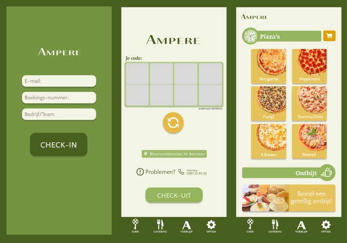
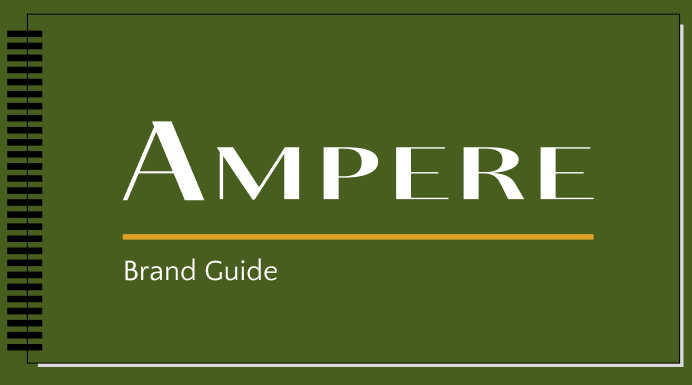
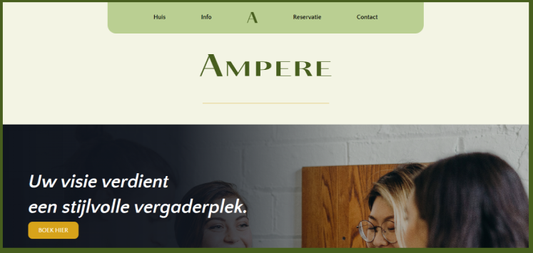

Werkplekleren 2
Hier vind je de case die ik samen met mijn team gemaakt heb tijdens Werkplekleren 2.

Een halfjaar geleden, op maandag 12 februari 2024, kregen mijn groepsgenoten en ik de opdracht van onze lectoren om aan de case van Smooth Sailing te werken. Ons team moest een branding, een website en een app ontwikkelen voor een nieuw project dat de naam "Ampere" zou dragen. De uitdaging was groot omdat we alleen de naam van het project wisten en verder geen details hadden. We begonnen met brainstormsessies om ideeën en concepten te verzamelen. Vervolgens verdeelden we de taken, waarbij iedereen een specifiek onderdeel van het project voor zijn rekening nam. Gedurende deze periode hebben we intensief samengewerkt, onze vaardigheden gebundeld en creatieve oplossingen gevonden voor de verschillende aspecten van het project. Dankzij de samenwerking en inzet van het hele team, slaagden we erin om een samenhangende branding te creëren, een functionele en aantrekkelijke website te bouwen en een gebruiksvriendelijke app te ontwikkelen. Deze opdracht was niet alleen een leerzame ervaring, maar ook een gelegenheid om onze grenzen te verleggen en onze kennis in de praktijk toe te passen.
Team-05
Doordat we deze opdracht gekregen hadden, heb ik heel erg geleerd om samen te werken met andere die ik eerst nog niet kende. We hebben elkaar altijd heel erg goed blijven motiveren want het was niet altijd makkelijk om gefocust te blijven tijdens de lange uren die we hebben doorgebracht op de Cordacampus. Maar het is ons toch gelukt om tot een mooi eindresultaat te komen. Binnen deze case heb ik me vooral bezig gehouden met het kleurenpallet, het logo, brandbook...
Eindreflectie
Een halfjaar geleden, op maandag 12 februari 2024, kregen mijn groepsgenoten en ik de opdracht van onze lectoren om te werken aan de case van Smooth Sailing. De taak was om een branding, een website en een app te ontwikkelen. De uitdaging lag in het samenwerken aan een onbekend project met teamleden die we niet eerder hadden ontmoet. Ondanks deze onbekendheid slaagden we erin om het project succesvol af te ronden. Mijn rol binnen het project was designer. Samen met de andere designers werkte ik aan het uiteindelijke ontwerp en zorgde ik voor overleg met de codeurs om de haalbaarheid te bespreken. Bij nieuwe ideeën overlegden we altijd eerst met het team om te bepalen wat haalbaar was. Vooral het ontwerpen van het logo kostte veel tijd en inspanning. Samen met Milla en Kaan heb ik hier intensief aan gewerkt, wat uiteindelijk leidde tot een mooi resultaat. Het hele team deed er alles aan om de deadlines te halen. We hielden ons strikt aan de planning en interne deadlines. Mijn bijdrage hierin was het opstellen van wekelijkse to-do-lijsten, waardoor we duidelijk wisten wat er nog moest gebeuren en wat al afgerond was. Ik zorgde er ook voor dat iedereen gemotiveerd bleef. Dit project heeft me doen inzien hoe belangrijk het is om je aan deadlines te houden en goed te communiceren. De creativiteit binnen het team en de goede samenwerking hebben geleid tot een uitstekend eindresultaat. Ik ben trots op het feit dat we alle deadlines hebben gehaald, wat ons veel motivatie en energie gaf. Persoonlijk ben ik ook gegroeid in mijn rol en vaardigheden. Wat minder goed ging, was het tijdig vragen van feedback aan de lectoren. Hierdoor zaten we soms vast op bepaalde onderdelen. Ook waren er momenten waarop er voor mij weinig te doen was omdat de focus lag op coderen, een gebied waar ik minder in thuis ben. Het brandbook ging op en af de ene persoon zei dat het goed was en de andere persoon zei dat het niet goed was waardoor het lang duurde voor het brandbook klaar was… Maar het is zeker wel een mooi resultaat geworden! Soms vond ik het jammer dat er niet altijd naar mijn suggesties werd geluisterd. De samenwerking binnen het team verliep over het algemeen erg goed. We werkten goed samen, wat zorgde voor veel motivatie. Er waren wel eens meningsverschillen, maar die werden snel opgelost. Het was soms frustrerend om niet altijd actief bij te kunnen dragen, maar achteraf bleek mijn bijdrage vaak toch nodig te zijn. Door dit project heb ik nu een betere kijk op wat de job inhoudt. Ik wil mijn team bedanken voor de fijne samenwerking en Smooth Sailing voor het vertrouwen in ons. Ik heb veel geleerd en kijk ernaar uit om verder te groeien in dit vakgebied. De positieve uitkomst van dit project inspireert me om mijn eigen weg te vervolgen en nog meer successen te behalen.
Deliverables
  